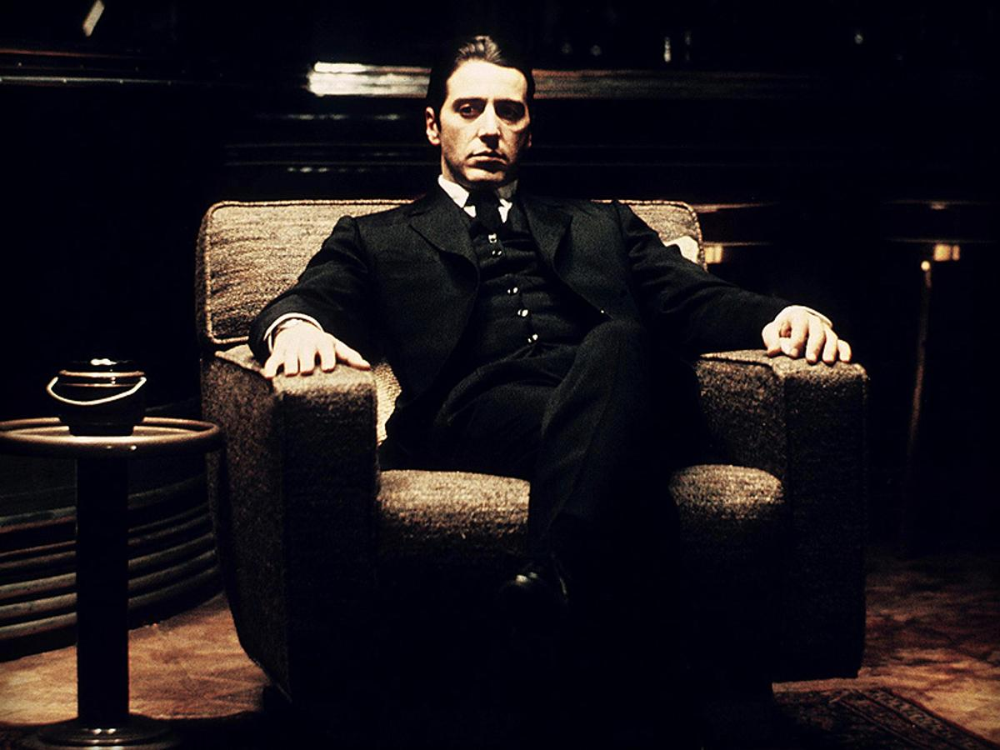
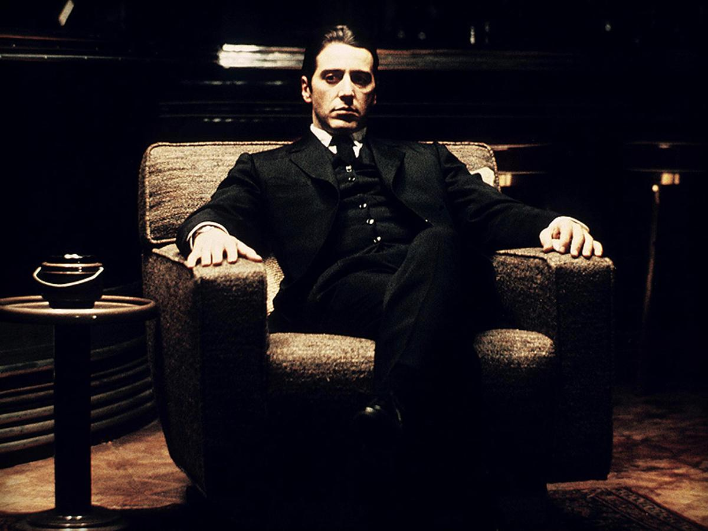

A paraplegic marine dispatched to the moon Pandora on a unique mission becomes torn between following
his orders and protecting the world he feels is his home.
Directed by - James Cameron Produced by - James Cameron, Jon Landau Written by - James Cameron Starring - Sam Worthington, Zoe Saldana, Stephen Lang, Michelle Rodriguez, Sigourney Weaver Music by - James Horner Cinematography - Mauro Fiore Edited by - James Cameron, John Refoua, Stephen E. Rivkin Production company - Lightstorm Entertainment, Dune Entertainment, Ingenious Media Distributed by - 20th Century Fox Release date - December 10, 2009 (London premiere), December 17, 2009 (United Kingdom), December 18, 2009 (United States) Running time - 161 minutes Country - United States, United Kingdom Language - English Budget - $237 million, $9 million+ (re-release) Box office - $2.788 billion Genre - Science fiction
Avatar Movie won the OSCAR award in three ways in the year:
Best Achievement in Cinematography. Best Achievement in Visual Effects. Best Achievement in Art Direction.
Story of two young people who belong to different worlds. It is the chronicle of a love improbable, almost impossible but inevitable dragging in a frantic journey they discover the first great love. Babi (Maria Valverde) is a girl from upper-middle class that is educated in goodness and innocence. Hache (Mario Casas) is a rebellious boy, impulsive,unconscious, has an appetite for risk and danger embodied in endless fights andillegal motorbike races, the limit of common sense.
Directed by - Fernando González Produced by - Francisco Ramos Written by - Federico Moccia Screenplay by - Ramon Salazar Starring - Mario Casas, María Valverde Music by - Manel Santisteban Cinematography - Daniel Aranyó Production company - Antena 3 Films Distributed by - Warner Bros Release date - 3 December 2010 Running time - 118 minutes Country - Spain Language - Spanish Budget - $3,000,000 Box office - 9,881,471 € Genre - Drama, Romance
The Fast and the Furious (also known as Fast & Furious) is an American franchise based on a series of action films that is largely concerned with illegal street racing and heists, and includes material in various other media that depicts characters and situations from the films. Distributed by Universal Pictures, the series was established with the 2001 film titled The Fast and the Furious; this was followed by seven sequels, two short films that tie into the series, and as of May 2017,[2] it has become Universal's biggest franchise of all time, currently the sixth-highest-grossing film series of all time with a combined gross of over $5 billion. The ninth installment of the franchise is set to be released on April 10, 2020.Directed by - Rob Cohen (1), John Singleton (2), Justin Lin (3–6, 9–10), James Wan (7), F. Gary Gray (8) Produced by - Neal H. Moritz (1–10), Vin Diesel (4–10), Michael Fottrell (4–5, 7–8), Clayton Townsend (6), Chris Morgan (8) Screenplay by - Gary Scott Thompson, Erik Bergquist (1), David Ayer (1), Michael Brandt (2), Derek Haas (2), Chris Morgan (3-10) Based on - "Racer X" by Ken Li[1] Starring - Paul Walker, Vin Diesel, Michelle Rodriguez, Jordana Brewster, Eva Mendes, Tyrese Gibson, Chris 'Ludacris' Bridges, Lucas Black, Sung Kang, Dwayne Johnson and etc. Music by - BT, David Arnold, Brian Tyler, Lucas Vidal, Cinematography, Ericson Core, Matthew F. Leonetti, Stephen F. Windon, Amir Mokri, Marc Spicer Edited by - Peter Honess, Bruce Cannon, Dallas Puett, Kelly Matsumoto, Fred Raskin, Christian Wagner, Dylan Highsmith, Leigh Folsom-Boyd, Greg D'Auria, Kirk Morri, Paul Rubell Production company - Universal Pictures, Original Film, Relativity Media, One Race Films, Media Rights Capital, China Film Co. Ltd, Seven Bucks Productions (Hobbs and Shaw) Distributed by - Universal Pictures Release date - 2001–present Country - United States Language - English Budget - Total (8 films): $1,009,000,000 Box office - Total (8 films): $5,137,244,781 Genres: Action, Crime, Thriller
 

By: Kholidjon KhoshimovThe Godfather is a 1972 American crime film directed by Francis Ford Coppola and produced by Albert S. Ruddy, based on Mario Puzo's best-selling eponymous novel. It stars Marlon Brando and Al Pacino as the leaders of a fictional New York crime family. The story, spanning 1945 to 1955, chronicles the family under the patriarch Vito Corleone (Brando), focusing on the transformation of Michael Corleone (Pacino) from reluctant family outsider to ruthless mafia boss. Paramount Pictures obtained the rights to the novel for the price of $80,000, before it gained popularity. Studio executives had trouble finding a director; their first few candidates turned down the position. They and Coppola disagreed over who would play several characters, in particular, Vito and Michael. Filming was done on location and completed earlier than scheduled. The musical score was composed primarily by Nino Rota with additional pieces by Carmine Coppola. The film was the highest-grossing film of 1972 and was for a time the highest-grossing film ever made. It won the Oscars for Best Picture, Best Actor (Brando) and Best Adapted Screenplay (for Puzo and Coppola). Its seven other Oscar nominations included Pacino, James Caan, and Robert Duvall for Best Supporting Actor and Coppola for Best Director. The Godfather is widely regarded as one of the greatest films in world cinema and one of the most influential, especially in the gangster genre. It was selected for preservation in the U.S. National Film Registry of the Library of Congress in 1990, being deemed "culturally, historically, or aesthetically significant" and is ranked the second-greatest film in American cinema (behind Citizen Kane) by the American Film Institute. It was followed by sequels The Godfather Part II (1974) and The Godfather Part III (1990).Directed by - Francis Ford Coppola Produced by - Albert S. Ruddy Screenplay by - Mario Puzo, Francis Ford Coppola Based on - The Godfather by Mario Puzo Starring - Marlon Brando, Al Pacino, James Caan, Richard S. Castellano, Robert Duvall, Sterling Hayden, John Marley, Richard Conte, Diane Keaton Music by - Nino Rota Cinematography - Gordon Willis Edited by - William Reynolds, Peter Zinner Production company - Alfran Productions Distributed by - Paramount Pictures Release date - March 15, 1972 (Loew's State Theatre), March 24, 1972 (United States) Running time - 177 minutes[1] Country - United States Language - English Budget - $6–7 million[2] Box office - $245.1 million Genres: Crime, Drama
Click
to move to Info(About me) pagekholidjon0022.github.io